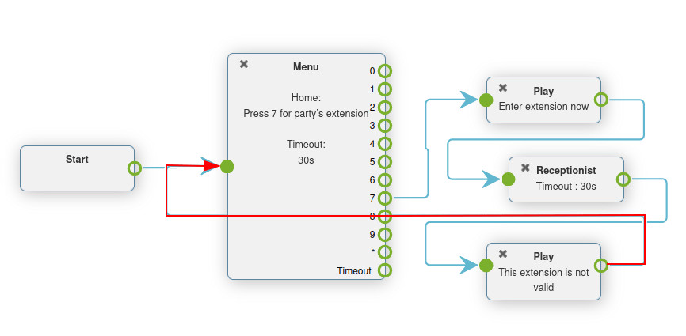
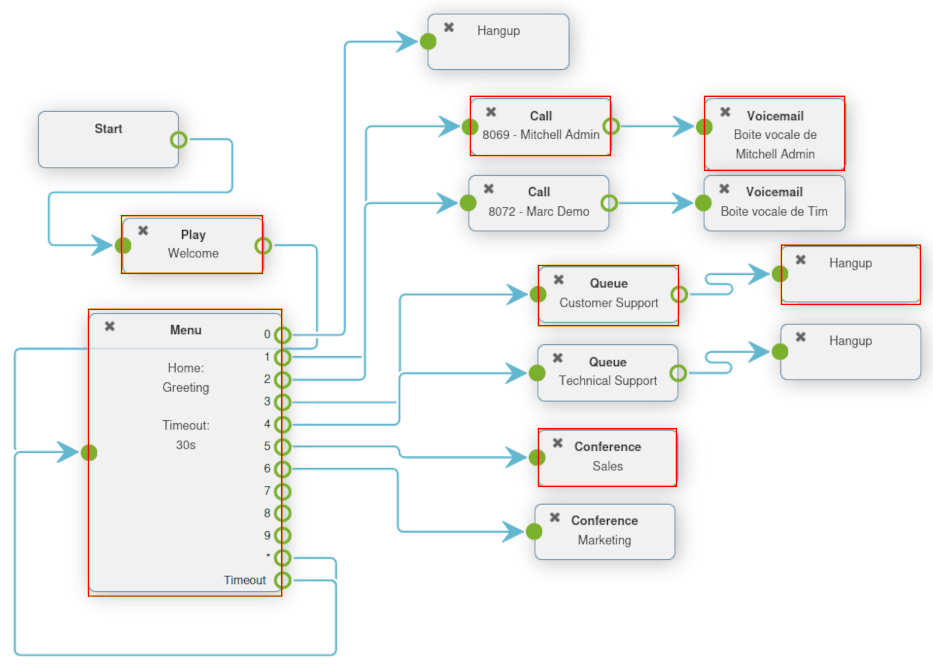

Dial plan basics¶
When someone calls a business, they might need to get in contact with customer support, a sales team, or even a person’s direct line. The caller might also be in search of some information about the business, such as store hours. Or, they might want to leave a voicemail, so someone from the company can call them back. With dial plans in Axivox, a company can manage how incoming calls like this are handled.
Using proper call architecture through a dial plan, callers get directed to the right people, or to the right information, in a quick, efficient manner.
This document covers the basic configuration of dial plans in Axivox.
See also
For more information on advanced dial plans, visit Advanced dial plans.
Important
Using a browser add-on for spelling may hinder the use of the visual editor in dial plans. Do not use a translator with the Axivox management console.
Dial plans¶
Access dial plans by navigating to Axivox management console, and clicking on Dial plans from the menu on the left.
To add a new dial plan from the Dial plan page, click the green button labeled, Add a new dial plan.
Note
Axivox has no limit to the number of dial plans that can be created. These can be added, and improved upon, at any time. This allows for sandboxes to be created with many different configurations.
To edit an existing dial plan, choose one of the following options to the right of the saved dial plan:
Delete: this action deletes the attached dial plan.
Edit: this action allows the user to edit the dial plan.
Visual Editor: this action opens a visual editor window, where the dial plan architecture can be viewed and edited.
Duplicate: this action duplicates the dial plan, and puts it at the bottom of the list, with an extension of one number (+1) larger than the original extension.
Dialplan editor (visual editor)¶
When the Visual Editor button is clicked for a dial plan on the Dial plan page, a pop-up Dialplan Editor window appears.
This pop-up window is the primary place where the architecture, or structure, of the dial plan is configured. In this window, a GUI appears, where various dial plan elements can be configured and linked together.

Important
New dial plans come blank with New element options for the user to Add and Save.
The method for saving in the Dialplan Editor is different from saving any other edits in the Axivox management console because the Save button must be pressed before closing the .
Then, before these changes can take place on the Axivox platform, the user must click Apply changes in the upper-right corner of the Dial plan page.
From the Dialplan Editor pop-up window, users can add a new element to the dial plan. To do that, open the New element drop-down menu, and select the desired element. Then, click Add.
Doing so adds that element to the visual editor display of the dial plan being modified. This element can be moved where desired amongst the other elements present in the dial plan.
Connect elements in the dial plan by clicking and dragging outward from the (open circle) icon on the right side of the element. Doing so reveals an (arrow) icon. Proceed to drag this (arrow) icon to the desired element in the dial plan that it is meant to connect with.
Connect the (arrow) icon to the circle on the left side of the desired element.
Calls displayed in the dial plan flow from left-to-right in the element.
In order to further configure a New element, double-click on the element inside the dial plan, to reveal a subsequent pop-up window, wherein additional customizations can be entered.
Each element has a different configuration pop-up window that appears when double-clicked.
Important
All elements must have a final destination in the dial plan in order to close a loop. This can be accomplished by implementing the Hang up element, or looping the element back to a Menu element or Digital Receptionist element elsewhere in the dial plan.
Once all desired dial plan elements and configurations are complete, remember to click Save before exiting the Dialplan Editor pop-up window. Then, click Apply changes on the Dial plans page to ensure they are implemented into Axivox production.
Dial plan elements¶
The following elements are available in the New element drop-down menu, while designing a dial plan in the Dialplan Editor pop-up window.
Basic elements¶
These are the basic elements that are used in simple dial plans in Axivox:
Call: call an extension or queue.
Play a file: play an audio file or voice greeting.
Voicemail: forward to a voicemail (terminal).
Hang up: hang up the call (terminal).
Queue: attach a call queue with a group of users to answer a call.
Conference: add a conference room for a caller to connect to.
Basic routing elements¶
Routing elements change or route the path of a caller, these are some basic routing elements used in Axivox:
Menu: add a dial-by-number directory and configure downstream actions (not terminal).
Switch: attach a manual on/off control that can divert traffic based on whether it is opened (On) or closed (Off).
Digital Receptionist: attach a virtual dispatcher to listen for extensions to connect to.
Advanced routing elements¶
These are the more advanced elements that route calls in Axivox:
Dispatcher: create a call filter to route traffic based on the geo-location of the caller ID.
Access List: create a tailored access list with VIP customer preference.
Time Condition: create time conditions to route incoming traffic around holidays, or other sensitive time-frames.
Multi-Switch: a mechanism to create paths, and turn them on and off, to divert incoming calls.
Advanced elements¶
The following are more advanced elements (not routing) in Axivox:
Record: recording feature is enabled (requires plan change, enabled in Axivox settings).
Caller ID: replace the caller ID by the called number or free text.
Important
Dial plan elements can be configured by double-clicking them, and linking different aspects of the Axivox console to them.
Attach to incoming number¶
To attach an existing dial plan to an incoming number, go to Axivox management console , and click on Incoming numbers.
Next, click Edit next to the number to which the dial plan should be attached.
Doing so reveals a separate page wherein that number’s dial plan can be modified. To do that, select Dial plan from the Destination type for voice call field drop-down menu. Then, choose the desired dial plan from the Dial plan field that appears.
With that in place, that means when that specific number calls in, the configured dial plan is activated, and runs through the prompts to properly route the caller.
Finally, Save the changes, and click Apply changes in the upper-right corner.
Basic dial plan scenario¶
The following showcases a basic dial plan scenario for call routing, where additional elements can be added to expand the setup. This basic dial plan scenario includes the following linked elements .
See also
This setup does not include any basic or advanced call routing. For more information on call routing, reference this documentation: Advanced dial plans.